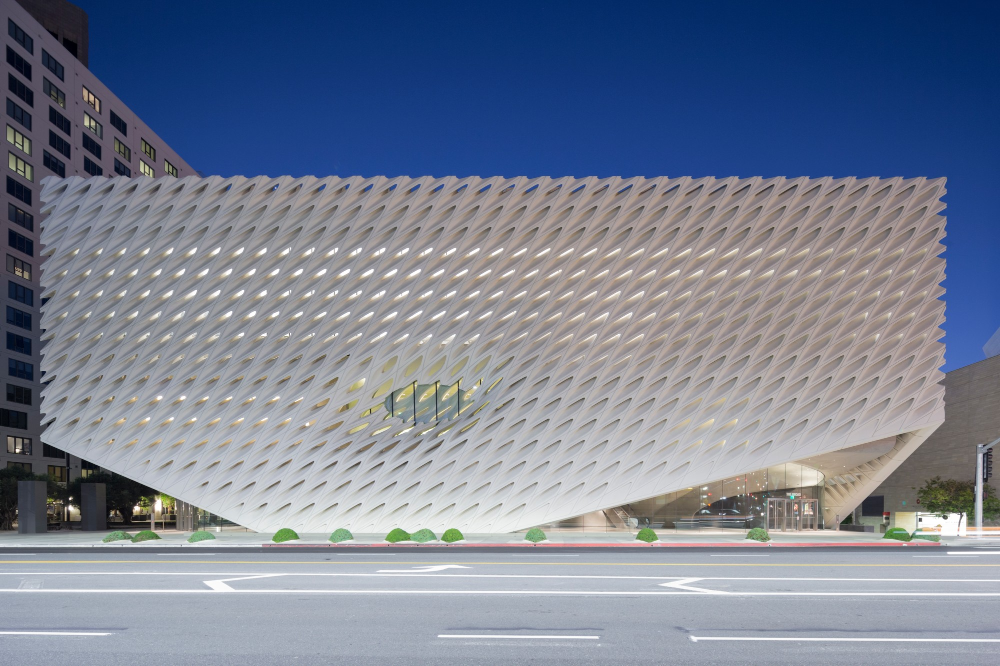
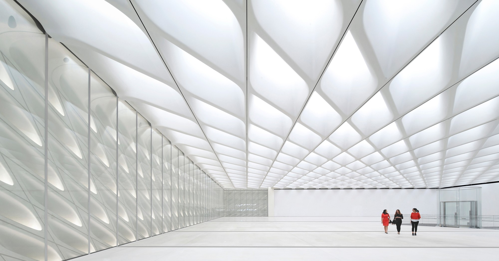

The Broad

The Broad is a new contemporary art museum founded by philanthropists Eli and Edythe Broad on Grand Avenue in downtown Los Angeles which opened in September of 2015. The museum offers free general admission. The museum is home to the 2,000 works of art in the Broad collection, which is among the most prominent holdings of postwar and contemporary art worldwide, and has launched an active program of rotating temporary exhibitions and innovative audience engagement. The 120,000-square-foot building features two floors of gallery space and is the headquarters of The Broad Art Foundation’s worldwide lending library, which has actively loaned collection works to museums around the world since 1984. In its inaugural year, The Broad attracted triple the number of its projected visitors, and since opening, has welcomed more than 1.7 million visitors. Eli and Edythe Broad also built a 24,000-square-foot public plaza, added streetscape improvements and enhanced pedestrian access on and around The Broad along Grand Avenue.
THE VEIL AND THE VAULT
Dubbed “the veil and the vault,” the museum’s design merges the two key programs of the building: public exhibition space and the storage that supports The Broad Art Foundation’s extensive lending activities. Rather than relegate the storage to secondary status, “the vault” plays a key role in shaping the museum experience from entry to exit. Its heavy opaque mass is always in view, hovering midway in the building. Its carved underside shapes the lobby below and public circulation routes. Its top surface is the floor of the third-floor galleries. The vault is enveloped by the “veil,” a porous, honeycomb-like exterior structure that spans across the block-long third-floor gallery and provides filtered natural daylight. The museum’s “veil” lifts at the corners, welcoming visitors into an active lobby and shop. The public is then drawn upwards via escalator, tunneling through the vault, arriving onto nearly an acre of column-free gallery space bathed in filtered light. The gallery has 23-foot-high ceilings, and the roof is supported by 7-foot-deep steel girders. Visitors exit the third floor via a winding central stair through the vault that offers glimpses into the vast holdings of the collection.
SUSTAINABILITY
The Broad received LEED Gold certification. With its electric car charging stations, bike parking spaces, rooftop drains routed to street level gardens that filter runoff, high-efficiency plumbing fixtures that help reduce water use by 40 percent, and its easy access to public transit including adjacency to the new Metro Regional Connector station at the corner of 2nd and Hope Streets (anticipated opening: 2020), The Broad aims to be in the top tier of eco-conscious and efficient museums.
DIVERSE VISITORSHIP
The Broad’s visitors reflected unprecedented diversity for an art museum, attracting a dramatically younger, more ethnically diverse audience than the national average – exceeding the client’s expectations. The Broad’s visitors reflect the diversity of Southern California and the dynamism of contemporary art. The average age of visitors is 33, compared to the national art museum average age of 45, and the percentage of ethnically diverse visitors is nearly three times the average of other art museums around the country. The Broad also continues to attract a large family audience with nearly 80 percent of visitors saying they had very little or a modest knowledge of contemporary art.
URBAN IMPACT
Since The Broad opened, the urban experience along Grand Avenue has flourished. Pedestrian traffic has visibly increased, and street life has expanded exponentially with food trucks and street musicians appearing daily and restaurants in the area extending their hours. This has been a great benefit to the local community situated around the museum. The museum generated more than $54 million in economic benefit to Los Angeles County, creating 490 jobs with labor income of $24 million. The museum also generated $8.2 million in local, state and federal tax revenue, according to a study by the Los Angeles Economic Development Corporation.
The Broad is LEED Gold certified.
